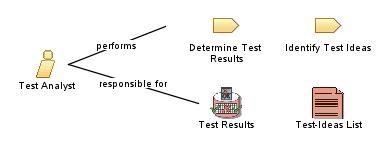

| Role: Test Analyst |
 |
|
 |
||
| Modifies |
|
|
|---|---|---|
| Process Usage |
|
|
|
Roles organize the responsibility for performing tasks and developing work products into logical groups. Each role can be assigned to one or more people, and each person can fill one or more roles. When staffing the Test Analyst role, you need to consider both the skills required for the role and the different approaches you can take to assigning staff to the role. In some development cultures this role is called the Test Designer, or considered a specialization of the Tester role. |
| Skills |
The appropriate skills and knowledge for the Test Analyst role include:
This role is primarily responsible for:
|
|---|---|
| Assignment Approaches |
The Test Analyst role can be assigned in the following ways:
Note also that specific skill requirements vary depending on the type of testing being conducted. For example, the skills needed to successfully analyze the requirements for system load testing are different from those needed for analyzing system functional testing requirements. |
© Copyright IBM Corp. 1987, 2006. All Rights Reserved. |